Cloud Assessment & Right-Sizing
We analyze spend across AWS, Azure, GCP, and your SaaS licenses to surface committed-spend waste, idle compute, and storage tiering opportunities.
Spend right-sizing, managed cloud operations, and secure remote infrastructure across AWS, Azure, and GCP — with monthly cost and health reporting.

We find the waste in your cloud and SaaS spend, right-size it, and run the operations so distributed teams stay secure and productive.
We analyze spend across AWS, Azure, GCP, and your SaaS licenses to surface committed-spend waste, idle compute, and storage tiering opportunities.
We monitor, patch, and autoscale your environments — with a monthly cost and health report and FinOps discipline that keeps spend predictable.
VPN and SD-WAN, SSO, and zero-trust remote access for distributed teams — plus full Microsoft 365 or Google Workspace management.
Entra ID and Intune (or Jamf) MDM that keep a remote-first workforce on a zero-trust posture — with SLA-backed help desk support when bundled.
The platforms our teams use to optimize and operate modern, distributed infrastructure.
We measure success by savings found, spend controlled, and remote teams that simply work.
A fixed-price, no-risk assessment: if we don't find at least two times the audit fee in annual savings, the audit is free.
We implement the savings as a fixed-fee sprint — right-sizing, committed use, and SaaS license cleanup.
Monitoring, patching, and FinOps with a monthly cost and health report and agreed response SLAs.
We take on migrations, modernization, help desk, and security as your infrastructure matures.
Tell us about your cloud estate and remote infrastructure — we will respond with a practical plan.